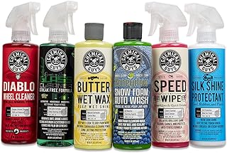

A complete step-by-step guide to full exterior and interior detailing — without paying $200 at a shop. Everything from the first rinse to the final wipe-down, plus the best kits to make it easier.
See Top Car Wash KitsWe compare real products, not imaginary winners. Every Amazon link uses affiliate tag brazenprodu01-20, which helps keep the site running at no extra cost to you.
A professional detail at a shop runs $150–$300. At home, with the right supplies and process, you can get results that are just as good — and do it on your schedule. The key word is process. Most people who try home detailing get mediocre results because they skip steps, use the wrong order, or use the wrong products for their paint type.
This guide covers the full sequence: exterior pre-rinse, two-bucket wash, clay bar treatment, paint protection, wheel and tire care, glass cleaning, and interior deep clean. Whether you're starting with a beginner car wash kit or building out a more complete setup, the process is the same.
Don't start with a product you don't have. Gather everything first so you're not stopping mid-detail to go find a towel. Here's the full supply list:
| Category | What You Need | Priority |
|---|---|---|
| Wash | Car wash soap, two buckets, wash mitt, grit guards | Essential |
| Rinse | Garden hose with spray nozzle or pressure washer | Essential |
| Dry | Large microfiber waffle-weave drying towel or air blower | Essential |
| Clay bar | Clay bar kit with detailing spray lubricant | Every 3–6 months |
| Protection | Car wax, paint sealant, or ceramic spray | Essential |
| Wheels/Tires | Wheel cleaner, stiff lug nut brush, tire dressing | Essential |
| Glass | Auto glass cleaner, microfiber glass cloth | Essential |
| Interior | All-purpose interior cleaner, vacuum, soft brush, detailing spray | Essential |
| Seats | Leather conditioner (leather seats) or fabric protector (cloth) | Optional upgrade |
Soap, clay bar lube, wax, and sealant all dry faster in direct sunlight — which means streaks, water spots, and residue that's hard to buff out. Park in a garage or a shaded area. If you have to work outdoors, do it in the morning or evening when temperatures are lower.
Start with a thorough rinse of the entire car using a garden hose or pressure washer. The goal is to remove loose dirt and debris before anything touches the paint. Then do the wheels and tires before the paint — wheels kick up the nastiest brake dust and contamination. If you do paint first, you'll splatter it while cleaning wheels.
The two-bucket method is the single most important technique for avoiding swirl marks. Bucket 1 has your soapy wash solution. Bucket 2 has plain rinse water (with a grit guard in the bottom). After each panel, rinse your wash mitt in Bucket 2 before reloading it in Bucket 1. This stops you from dragging grit back across the paint.
Do a full rinse from top to bottom. For the drying stage, use a large waffle-weave microfiber drying towel — not a bath towel, not chamois leather (they drag and scratch). Blot and drag gently rather than pressing hard. For water in crevices and trim gaps, use a compressed air can or leaf blower on low to blow out the water before it spots.
Run the zip-lock bag test: slip your hand inside a plastic bag and glide it over the clean, dry paint. If you feel roughness or grit, your paint has above-surface contaminants (industrial fallout, tree sap particles, overspray) that washing can't remove. That's when you need a clay bar.
Drop your clay bar? Throw it out. Any clay that hits the ground should never touch your paint again — the contamination risk isn't worth it.
Paint protection is what separates a detail from a car wash. It adds gloss, repels water, and creates a sacrificial barrier between your paint and the environment. Three main options:
Apply in small sections, let it haze slightly, then buff off with a clean microfiber. Less is more — a thin even coat bonds better than a thick one.
Car glass has different contamination on each side. The outside gets road film, water spots, and bug splatter. The inside builds up an oily film from off-gassing plastics and HVAC air circulation — it's harder to see but creates glare at night.
Always vacuum before you use any liquid cleaner. Wet cleaning dry grit grinds it into fabric or spreads it across hard surfaces. Remove the floor mats and vacuum them separately. Use a crevice tool for door pockets, seat seams, and the gap between the seat and center console. A detailing brush is useful for HVAC vents before vacuuming the loosened dust.
Spray interior all-purpose cleaner on a microfiber (not directly on the surface) and wipe down all hard surfaces — dashboard, center console, door card panels, steering wheel. A soft detailing brush helps agitate vents and speaker grilles. Finish with a light layer of interior protectant that provides a matte finish rather than a greasy shine — shiny dashboards create glare on the windshield.
For cloth seats and carpet: use a fabric cleaner/agitator and a stiff interior brush to loosen stains, then blot (don't scrub) with a clean microfiber. A wet/dry vacuum or extractor pulls out the most residue. For leather: use a dedicated pH-balanced leather cleaner on a soft brush, then follow with a leather conditioner to prevent cracking. Never use all-purpose cleaner on leather — it strips the protective coating.
If you want to skip assembling individual products, these complete kits give you most of what the process above requires in one purchase:
The most popular starter kit for a reason — it covers wash, foam, wheels, interior, and drying in one box. Includes Chemical Guys' flagship Honey Dew Snow Foam, Wheel Cleaner, Total Interior Cleaner, a Hydro Suds ceramic wash soap, and a waffle-weave drying towel. The bucket and foam cannon attachment make the two-bucket method immediately doable without hunting for extra supplies. Best for first-timers who want to do it right without assembling parts separately.
Meguiar's kits are the consistent choice for daily driver owners who want good results without enthusiast-level complexity. The formula lineup — Gold Class Car Wash, Ultimate Liquid Wax, Quik Detailer, and Endurance Tire Gel — handles exterior wash, protection, quick-detailing, and tire dressing. The wax is easy to apply and remove by hand. If you just want your car clean and protected with minimum fuss, this kit delivers reliably and costs less than Chemical Guys for comparable coverage.
The strongest interior-focused option on this list. Adam's formulates specifically for each interior surface type — their leather cleaner, interior detailer, and carpet/upholstery cleaner are each purpose-built rather than one all-purpose solution stretched across everything. The included brushes have the right bristle stiffness for vents, seams, and door cards without scratching. Best for buyers whose interior is the main focus and who already have exterior wash covered.
A smart hybrid kit that pairs Mothers' CMX Ceramic Spray Coat with their California Gold carnauba wax. The ceramic spray goes on first as a durable base layer (6–12 months of protection). The carnauba tops it for added gloss depth. It's an unusually complete protection stack for a single kit purchase. Best for owners who care about paint protection longevity and want a showroom-quality result that holds up for months rather than weeks.
Griot's occupies a sweet spot between mass-market and enthusiast pricing. Their car wash soap is genuinely excellent — low-sudsing, pH-balanced, and safe for ceramic-coated paint. The spray-on wax is the fastest paint protection in the category: apply on a wet or dry panel, spread, and rinse or wipe off. No haze stage, no buffing. Best for owners who want Griot's quality without the Chemical Guys or Adam's premium markup.
Washing in circular motions: Circular scrubbing is how swirl marks happen. Always use straight back-and-forth or overlapping straight-line passes with your mitt.
Using household cleaners on car paint: Glass cleaner with ammonia, all-purpose spray, and dish soap all strip wax and sealant protection and can dull clear coat over time. Use only pH-balanced car wash soap on painted surfaces.
Detailing in direct sunlight: Heat causes soap and wax to dry before you can work them properly. Residue bakes into the paint and is difficult to remove. Always detail in the shade or indoors.
Using the same towels for paint and interior: Cross-contaminating towels transfers brake dust, silicone, and tire dressing to painted surfaces. Color-code your microfibers — one color for paint, one for glass, one for interior.
Skipping the second bucket: One bucket is the single biggest cause of swirl marks. The second rinse bucket with a grit guard at the bottom captures the contaminants from your mitt before it goes back in the soap. Non-negotiable.
A full exterior and interior detail takes 3–5 hours for a first-timer. Once you're comfortable with the process and have supplies organized, you can do a thorough detail in 2–3 hours. Skipping machine polishing keeps the time manageable.
At minimum: car wash soap, two buckets, a wash mitt, microfiber drying towels, paint sealant or wax, a wheel cleaner, interior all-purpose cleaner, automotive glass cleaner, and a vacuum. A foam cannon or clay bar kit upgrades the result significantly.
A foam cannon pre-soaks the paint and softens contaminants before your mitt touches anything, which significantly reduces swirl risk. Hand washing alone is safe with the two-bucket method, but a foam cannon is the smarter approach if paint protection is a priority.
No. Clay bar treatment is needed when the paint feels rough or gritty after washing. Do the zip-lock bag test — if you feel texture through the bag, it's time to clay. Most cars need it every 3–6 months depending on environment and how often the car is exposed to industrial fallout or tree sap.
Carnauba wax gives a deep, warm gloss and lasts 1–3 months. Paint sealant is synthetic, bonds more durably to the paint, and lasts 4–12 months. Sealant is the better long-term choice for daily drivers. Ceramic coatings are the most durable option and last 1–3 years but require careful application.
Yes. A garden hose with a spray nozzle works for pre-rinse and final rinse. The two-bucket wash method safely handles everything the pressure washer would normally do on painted surfaces. A pressure washer makes the job faster and is useful for wheels and door jambs, but it's not required.
